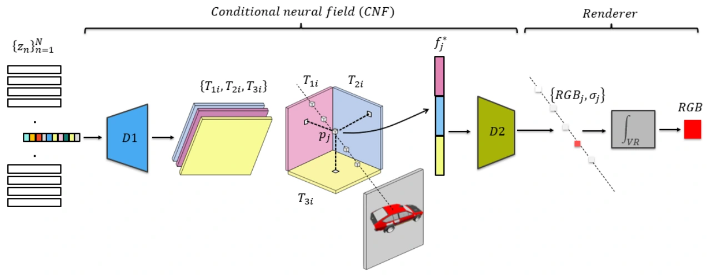
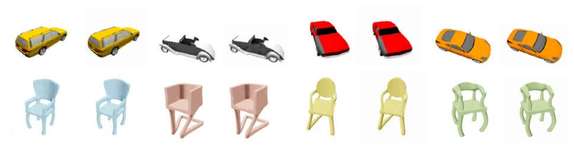
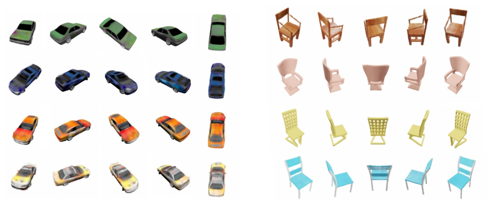
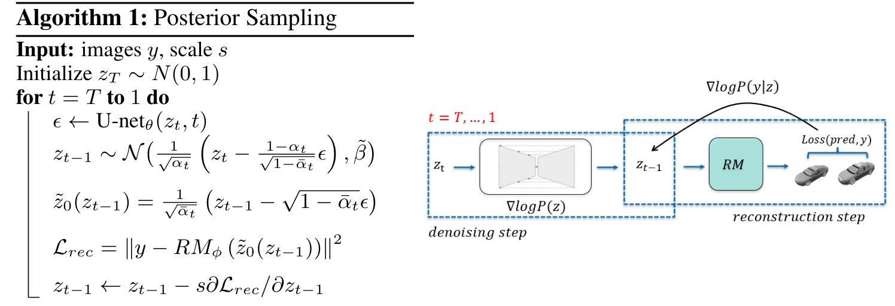

Predicting 3D Structure by Latent Posterior Sampling
What does the rest of a 3D object look like when you only see part of it? We combine a NeRF-based renderer with a diffusion prior over 3D scene latents to sample plausible reconstructions from partial observations.
Sparse observation, full consistent 3D scene
The car and chair examples show reconstructions from partial images. Each reconstruction can be rendered from new viewpoints.
Posterior samples
Each row starts with one observed view and shows four plausible 3D reconstructions of that same chair.
How latent posterior sampling works
Training has two stages. First, we learn a reconstruction model and a latent code for each training scene. Then we train a diffusion prior on those codes. At inference, the diffusion prior proposes plausible scenes and the reconstruction model guides them toward the observed data.
Let z denote a 3D scene latent and y the observation. Bayes’ rule combines the likelihood and prior into a posterior over scenes.
Stage 1 · Train the reconstruction model and scene latents
We jointly optimize a shared reconstruction model and one latent code per training scene. The model decodes each code into three feature planes and renders pixels from known camera poses. The rendering error updates both the model and the codes.
Likelihood. The reconstruction model defines p(y | z) by rendering the observed pixels from a candidate latent and comparing them with y. With Gaussian RGB observation noise, the log likelihood is a scaled negative squared reconstruction error.


Stage 2 · Train a diffusion prior over the latents
Prior. A denoising diffusion model learns p(z) from the scene codes fitted in Stage 1. Starting from noise, the prior can sample a new scene code, which the reconstruction model renders from multiple viewpoints.

Stage 3 · Sample the posterior given observations
Starting from noise, we alternate a diffusion denoising step with a correction based on the observations. We render an estimate of the clean latent at the observed camera pose, compare the prediction with the measurements, and backpropagate the reconstruction loss to steer the latent. Repeating the process from different noise draws gives multiple plausible scenes for the same input.
In practice, we approximate the likelihood gradient by rendering from the estimated clean latent.

Reconstruction from different observations
The same learned prior supports half images, sparse RGB pixels, and sparse depth measurements by changing the likelihood at inference time. In the examples below, the hidden half of an image has higher uncertainty, while sparse depth constrains shape and leaves appearance uncertain.
Because the reconstruction model renders each pixel along its own camera ray, we can compute the guidance loss using only the observed RGB pixels, even when they are scattered across the image. The model also predicts color and volume density separately at 3D points along each ray, so at test time sparse depth can guide the density predictions directly, without RGB measurements or retraining.